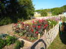 | 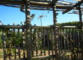 | 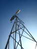 | 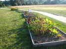 |
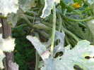 | 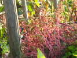 | 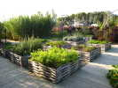 | 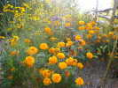 |
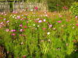 | 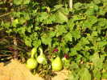 | 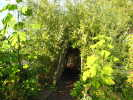 | 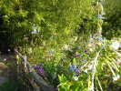 |
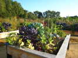 | 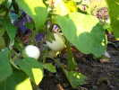 | 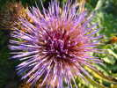 |
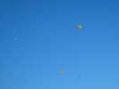
Vendredi soir, petit repas en commun, chacun amène ses mets locaux ! Samedi matin, grand beau, pas trop de vent, les légers se mettent en l'air quand même...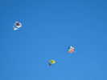
On voit surtout des Pentagons et des Rollers, mais pas que ça !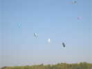
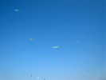
Le vent monte un peu, le ciel commence à se meubler, de pyrodeltas, par exemple...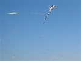
Les cerfs-volants commencent à se diversifier et à prendre du volume...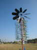
Joël a planté tous ses mobiles qui ont encore un peu de mal à s'animer. Son dernier éolien génère des sons, les billes choquant alternativement à gauche sur des tubes ou à droite sur des lamelles de piano d'enfant...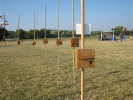
Bruno Tondellier a installé ses cordes vibrantes, après avoir réparé les dégâts de Dieppe...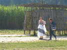
Une mariée, charmante, vient faire un petit tour parmi nous...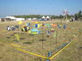
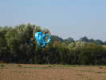
Le vent n'est quand même pas extraordinaire, et pas mal turbulent ! Le circoflex forme une courbe harmonieuse avant de se poser délicatement dans le champ...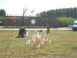
Thérèse a recréé son univers déchirant de petits oiseaux, de petits poissons qui ne se rejoindront jamais !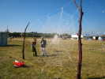
Ses amies, qui avaient déjà installé à Chatelaillon un JdV avec des radios, ont créé un nouveau motif : deux toiles d'araignées, une blanche, et une noire avec le nid et peut-être l'araignée ?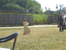
Une princesse passe comme dans un conte de fées, avec une robe couleur du soleil...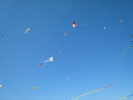
Le vent monte progressivement. Michel a pu lancer son grand flow-form et il y a du monde en l'air, assez haut pour échapper autant que faire se peut aux turbulences !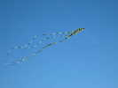
Les queues de cerf-volant, sans doute de Vent de Folie, indiquent bien que le vol n'est pas une sinécure. D'ailleurs il y aura de nombreux emmêlages, et Hugo se fera couper une ligne...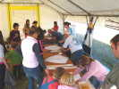
L'Agence du Vent avait monté un atelier de construction de Eddies assez grands pour les enfants... Catherine, Arlette, René et Gérard ont turbiné dur dans l'atelier pour le montage, mais aussi derrière le stand pour découper les toiles etc.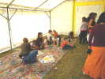
Sur la bâche, les enfants pouvaient aussi décorer leur création...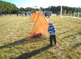
Les CarnetDeVol avaient dressé leurs pyramides d'organza, pas trop tendues pour que les enfants puissent se glisser dessous, ce qu'ils ne manquent jamais de pratiquer...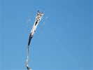
Ce masque de quelques mètres a tenu toute la journée grâce à sa longue traîne...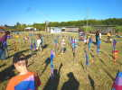
Le jardin de bannières de Michel Mauguen plaît beaucoup aux enfants qui y courent dans tous les sens !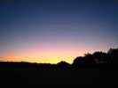
Mais le soleil se couche, il faut penser un peu à autre chose qu'au cerf-volant !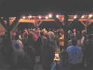
Gros apéritif de l'Agence du Vent, avec pour arme principale la Bernache, un mélange pas si innocent ! (La Bernache est un vin apéritif liquoreux à 17 degrés, issu d'un moût et d'un vin de Seyval Blanc fortifié et mûri deux ans, etc, dixit le Web).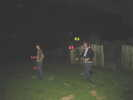
Pour attendre le dîner, ces jeunes gens ont fait des miracles avec des diabolos, les lançant à des hauteurs incroyables ! Manier deux diabolos ensemble est pour eux l'enfance de l'art...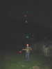
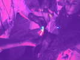
Pour égayer, de petits marqueurs lumineux de pêcheurs de nuit peuvent être réunis et former un bracelet...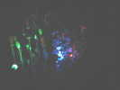
Néné est content, il a du 220 et a pu éclairer ses cactus tout près du passage.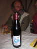
Le dîner a été excellent, et le vin, du Chinon marqué au signe du festival de la Gloriette était bon....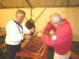
L'atelier post-dîner traditionnel consistait cette année à créer avec des tiges de bambou et de la Durit des structures stables !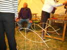
Joël et Patricia ont créé des poissons qui seront plantés demain dans les JdVs...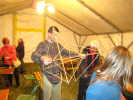
Christophe a réalisé une oeuvre d'ingénieur : 2 pyramides tétraédriques indépendantes et inversées, reliées seulement par des ficelles et qui ne peuvent se toucher...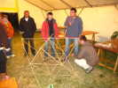
Une équipe a débuté la construction d'une structure complexe dont ils avaient une maquette, un tétraèdre étoilé... Mais ils ont fini par broder autre chose sur la base initiale...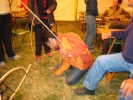
Un artiste a créé un poisson plus original, avec un oeil spécial...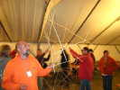
Michel Mauguen s'est contenté d'un cube, pas si facile à obtenir... Le sien est quand même très souple et ne répond en rien au critère d'autostabilité imposé dans le défi...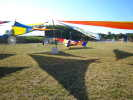
Sur la pelouse centrale, Michel Gressier avait monté ses splendides velums pour servir d'abri solaire, mais surtout pour décorer !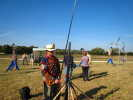
Jean-Claude monte son mât pour prendre des photos quasi-aériennes !